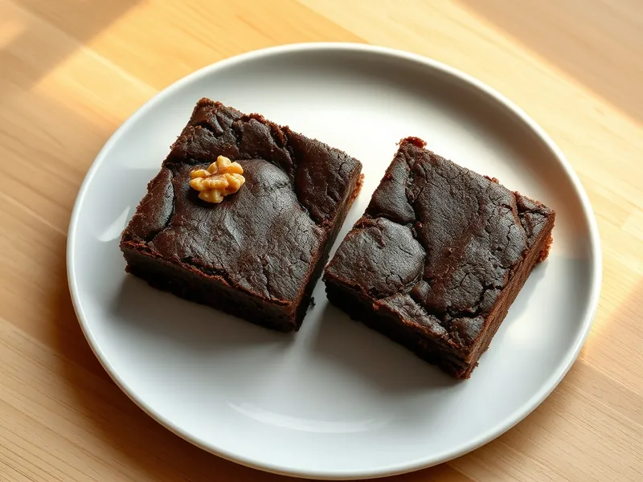

Брауни шоколадный с орехами
Плотный влажный шоколадный пирог с хрустящей корочкой и грецкими орехами
60 мин12 порц.335 ккал на порциюБ 5 · Ж 22 · У 28Американская кухня
Открыть в приложении: порции, таймеры, список покупок
Продукты на 12 порц.
- Шоколад тёмный200 г
- Сливочное масло150 г
- Сахар180 г
- Яйцо куриное3 шт
- Мука пшеничная80 г
- Какао-порошок2 ст. л.
- Грецкие орехи80 г
- Соль1 щеп.
Как готовить
- Растопите шоколад со сливочным маслом на водяной бане на слабом огне 5 минут до гладкости, остудите 5 минут.
- Взбейте яйца с сахаром венчиком 2 минуты, влейте шоколадную смесь и перемешайте.
- Всыпьте муку, какао и соль через сито, добавьте рубленые орехи и перемешайте лопаткой до однородности.
- Выложите тесто в форму 20х20 см с бумагой и разровняйте.
- Выпекайте при 180 °C (средний жар) 22-25 минут: сверху должна появиться корочка, а шпажка из середины выйти с влажными крошками.
- Остудите брауни в форме 20 минут и нарежьте на 12 квадратов.
Совет. Не передерживайте брауни в духовке: он дойдёт при остывании, а пересушенный станет обычным кексом.